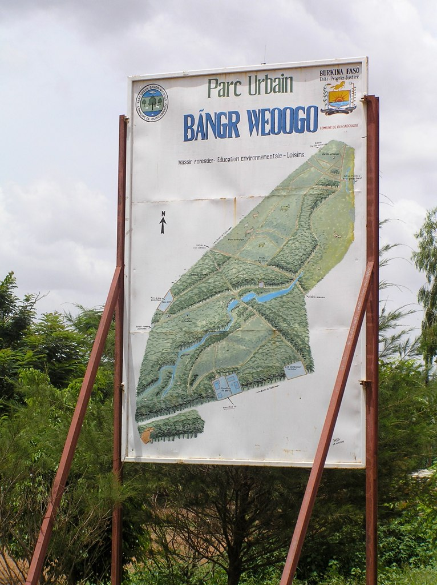
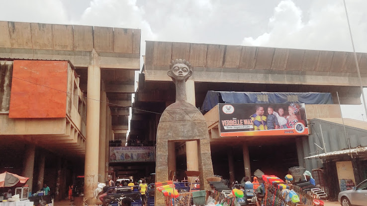
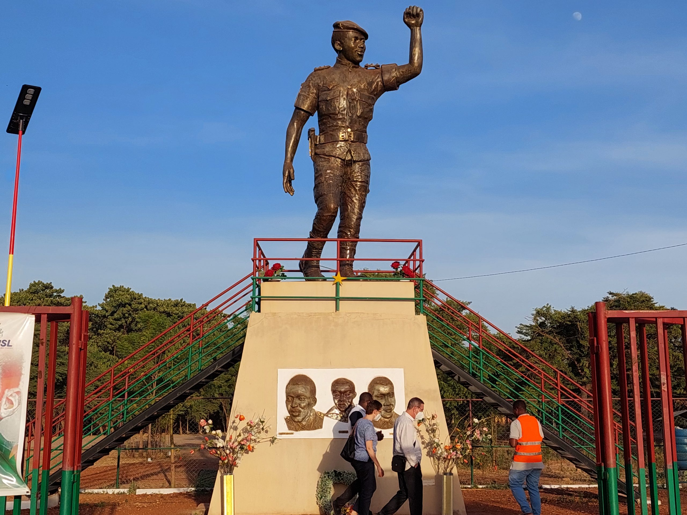
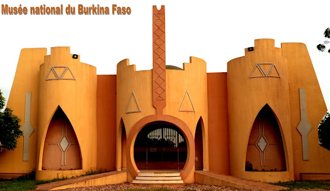

LE PARC URBAIN BANGR-WEOOGO

LA GRANDE CATHEDRALE DE OUAGADOUGOU

LE GRAND MARCHE ROOD-WOOKO

LA GRANDE MOSQUE DE OUAGADOUGOU

LE MEMORIAL DE THOMAS SANKARA

MONUMENT DES MARTYRS ET DES HEROS NATIONAUX

LE MUSE NATIONAL DE OUAGADOUGOU

LE MUSE DE LA MUSIQUE DE OUAGADOUGOU

LE VILLAGE ARTISANAL DE OUAGADOUGOU

LE PALAIS PRESIDENTIEL DE KOSSYAM